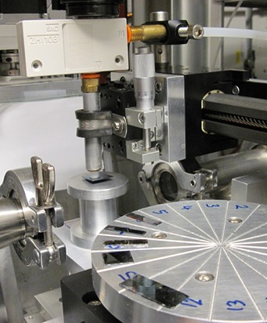

|
Sample
Changing Robot

D-line solvent vapor annealing cell for
molecules, nanoparticles, and polymers
You don't have to be fancy or spend a lot of money, just to struggle with the robot control. My robot was simple and light-weight, fit into the crammed space of the GIWAXS set-up, and could be set up from scratch in about 30min. And it was easy to embed in the motion control. Best of all, I had fun mentoring three undergraduate students to make the basic design and modifications. Sample robots are highly beneficial for combinatoric studies when users bring a couple of hundred ready-made samples to your line. |